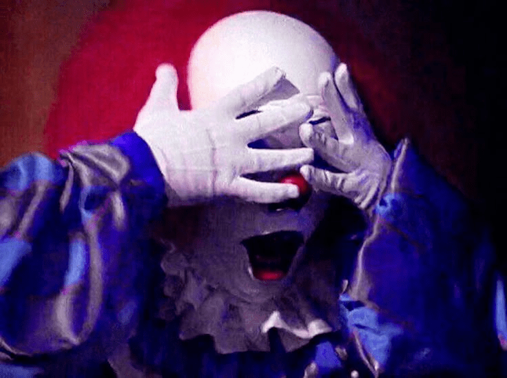

Leyendas
Pennywise
Pennywise, conocido como "It", es un aterrador payaso que aparece en la novela de Stephen King. Se alimenta del miedo y se manifiesta cada 27 años en Derry, Maine, donde acecha y secuestra a niños, convirtiéndose en una figura emblemática del horror en la cultura popular.
Conocer másWrinkles
Wrinkles the Clown es un personaje creado por Michael Beach Nichols, que se presenta como un payaso aterrador disponible para asustar a niños mal comportados en Florida.
Conocer másKiller klowns
Estos payasos tienen un aspecto grotesco y utilizan métodos inusuales y aterradores para capturar a los habitantes del pueblo, como globos que se convierten en trampas mortales y dulces que en realidad son armas.
Conocer másKurt
Un padre se pone un viejo disfraz de payaso para animar la fiesta de cumpleaños de su hijo, sin saber que está maldito. A medida que avanza la historia, un demonio sanguinario toma posesión de él, convirtiendo su vida en una pesadilla aterradora.
Conocer másTwisty
Twisty fue un payaso que, tras ser rechazado y burlado por los niños y la sociedad, se volvió violento. Su historia explora temas de aislamiento, rechazo y la búsqueda de aceptación.
Conocer másArt

Art persigue a un grupo de jóvenes en la noche de Halloween, desatando una ola de violencia y terror. Es conocido por sus métodos brutales y creativos de asesinato, lo que lo convierte en un antagonista aterrador. Su falta de remordimiento y su naturaleza sádica lo hacen destacar como un villano memorable en el género del horror.
Conocer más